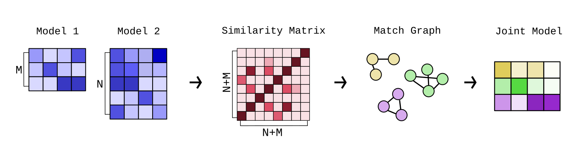
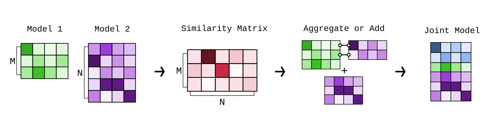

Model/Topic Merging
In Turftopic, some models allow you to merge information from multiple topic models into one.
Currently, this can be done with SensTopic's partial_fit method, which updates a topic model by merging it with an identically initialized model
on a new batch of data.
More models will be implemented in the future.
This guide teaches you about the different methods for merging topics and explanations on why they are useful, and how you should use them.
Topic merging consists of the following steps:
- Determine topic matches based on some topic representations (typically a model's
components_attribute) and a similarity threshold - Aggregating the topic representations based on some aggregation regime
See the default named options from Turftopic in the table bellow. We deem these to be reasonable defaults that cover most of the functionality, users might be interested in.
| Merge method | Match type | Aggregation | Recommended Use Cases |
|---|---|---|---|
symmetric_mean |
Symmetric | np.average |
Online model fitting on static datasets. |
asymmetric_mean |
Asymmetric | np.average |
Dynamic modelling, static analyses, where intermediate states are used for analysis. |
keep_first |
Asymmetric | keep_first |
Dynamic modelling, where intermediate states should be immutable. |
Determining matches
When merging topic models, it's important to know the difference between symmetric and asymmetric merges.
Symmetric merge
A symmetric merge treats both models as equal, and finds matching topics in all models at the same time to then merge them into a single topic in the new model.

This is done in the following steps:
- We calculate a topic similarity matrix between topics from all models. By default this is based on topic representations' cosine similarity.
- We compute a match matrix based on the similarity matrix and a similarity threshold. The default value is
0.7. - The match matrix is used as a match graph between all topics in the models.
- To find, which topics should be aggregated to derive the new topics, we find graph components in the match graph. Each component of the match graph is then assumed to be the same topic, and each component will be aggregated into a new topic.
Note
When using symmetric merge, the number of topics from one step to another could go down not just up. This is because sometimes the new model introduces bridges in the match graph between old topics, that then get merged into one larger topic. This is important to take into account when you make assumptions about the way your topics behave.
A symmetric merge is a good fit, if you wish to find all topics in a corpus, and you do not base any of your analyses on intermediate states of the model. Using symmetric merges on a static dataset is a good idea, using it on temporal data (dynamic modelling) is a bad idea.
Asymmetric merge
During an asymmetric merge, earlier models take precedence over new ones. What this means is that newer models' content get merged into older models, while the older models' structure is left unscathed.

The old model's topics might get updated based on the new model, but they will not be removed or merged into other topics. This also means that the number of topics never decreases, only increases over time.
- For each pair of old and new model:
- Calculate the similarity and match matrices between the old and new model.
- Aggregate the matches from the new model into the old models topics.
You should use an asymmetric merge either if you want to keep your analyses in-tact based on intermediate states, or if you want to make the assumption that the number of topics is non-decreasing over time. Asymmetric merges are perfect for instance for dynamic topic modelling.
Aggregation Regimes
You can technically use any aggregation method to aggregate topics between matches, but there are two defaults used in Turftopic, that probably cover most use cases.
np.average
np.average takes the weighted arithmetic mean of topic representations.
By default, no weights are provided, but most models, where there is a deliberate implementation included, averages are weighted by the number of documents the models have seen.
This aggregation method is very useful when you want all of your data to influence your topics, and you don't care whether the keywords throughout your analysis change for the topics.
keep_first
keep_first aggregation ignores all topics except the first one in a match.
This means that topics that are already in the model will be immutable.
New topics will be added, but the ones in the model will not change.
This is great when you need to make the assumption that old topics never change. For instance, when you have already based some of your analyses on old topics in your model, new information should not change those analyses.
API Reference
turftopic.merging.symmetric_merge(component_matrices, weights=None, match_threshold=0.7, agg=np.average, sim_fn=cosine_similarity, allow_within_model_match=False)
Performs a symmetric merge on a number of topic models.
Parameters:
| Name | Type | Description | Default |
|---|---|---|---|
component_matrices |
list[ndarray]
|
List of topic representations from all topic models. |
required |
weights |
Weight for each of the models in case of a weighted merge. |
None
|
|
match_threshold |
float
|
Similarity threshold above which two topics will be considered a match. |
0.7
|
agg |
Aggregation method to use for matching topics. |
average
|
|
sim_fn |
Function to produce the similarity matrix. |
cosine_similarity
|
|
allow_within_model_match |
Determines whether matches can happen within models. |
False
|
Returns:
| Type | Description |
|---|---|
ndarray of shape (n_new_topics, n_dims)
|
New topic representations merged from the old ones. |
MergeHistory(list[list[int]])
|
Indicates which joint topic the original topics were merged into. The data structure is a list of lists, where each list contains the indices of the joint topics each of the original topics were merged into. e.g. [[0,2,1], [3,2]] would indicate that the topics of the first model were merged into topics 0, 2 and 1 in the joint model, while the second model's topics were merged into 3 and 2. |
Source code in turftopic/merging.py
61 62 63 64 65 66 67 68 69 70 71 72 73 74 75 76 77 78 79 80 81 82 83 84 85 86 87 88 89 90 91 92 93 94 95 96 97 98 99 100 101 102 103 104 105 106 107 108 109 110 111 112 113 114 115 116 117 118 119 120 121 122 123 | |
turftopic.merging.asymmetric_merge(component_matrices, weights=None, match_threshold=0.7, agg=keep_first, sim_fn=cosine_similarity)
Performs an asymmetric merge on a number of topic models.
Parameters:
| Name | Type | Description | Default |
|---|---|---|---|
component_matrices |
list[ndarray]
|
List of topic representations from all topic models. |
required |
weights |
Weight for each of the models in case of a weighted merge. |
None
|
|
match_threshold |
float
|
Similarity threshold above which two topics will be considered a match. |
0.7
|
agg |
Aggregation method to use for matching topics. |
keep_first
|
|
sim_fn |
Function to produce the similarity matrix. |
cosine_similarity
|
|
allow_within_model_match |
Determines whether matches can happen within models. |
required |
Returns:
| Type | Description |
|---|---|
ndarray of shape (n_new_topics, n_dims)
|
New topic representations merged from the old ones. |
MergeHistory(list[list[int]])
|
Indicates which joint topic the original topics were merged into. The data structure is a list of lists, where each list contains the indices of the joint topics each of the original topics were merged into. e.g. [[0,2,1], [3,2]] would indicate that the topics of the first model were merged into topics 0, 2 and 1 in the joint model, while the second model's topics were merged into 3 and 2. |
Source code in turftopic/merging.py
130 131 132 133 134 135 136 137 138 139 140 141 142 143 144 145 146 147 148 149 150 151 152 153 154 155 156 157 158 159 160 161 162 163 164 165 166 167 168 169 170 171 172 173 174 175 176 177 178 179 180 181 182 183 184 185 186 187 188 189 190 191 192 193 194 195 196 197 | |
turftopic.merging.keep_first(a, axis=0)
Source code in turftopic/merging.py
126 127 | |